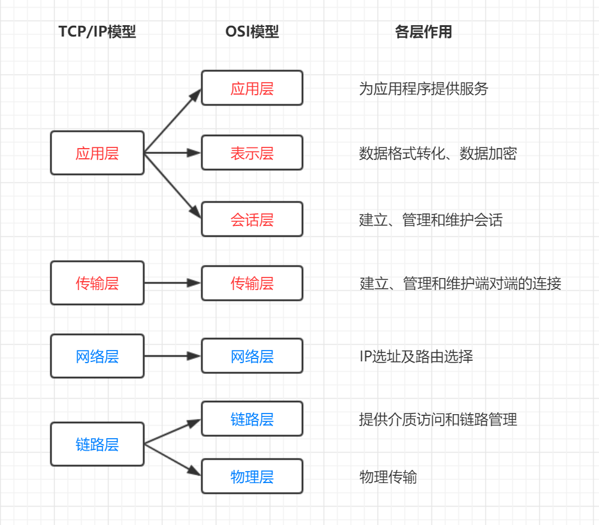
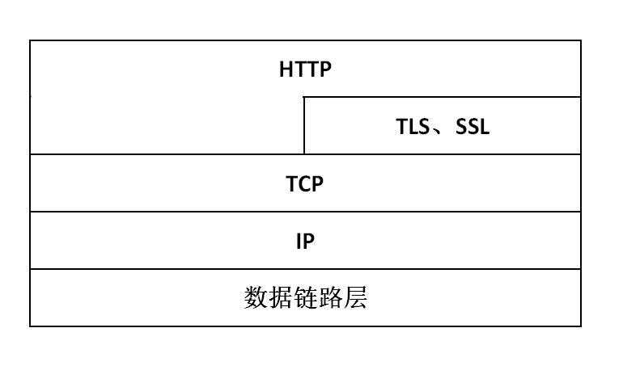
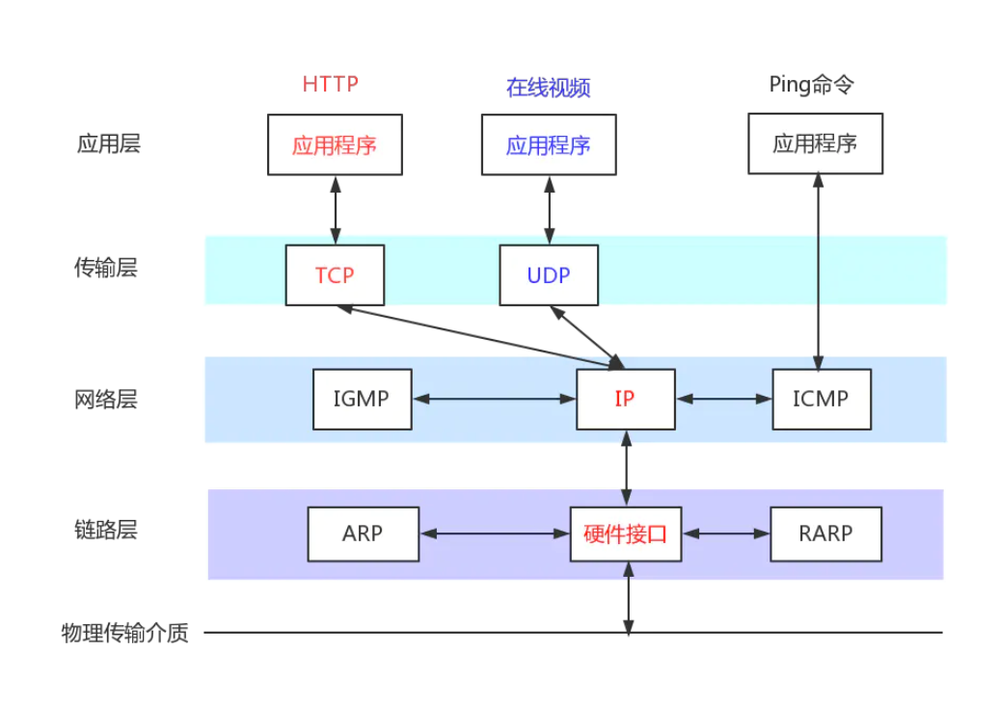
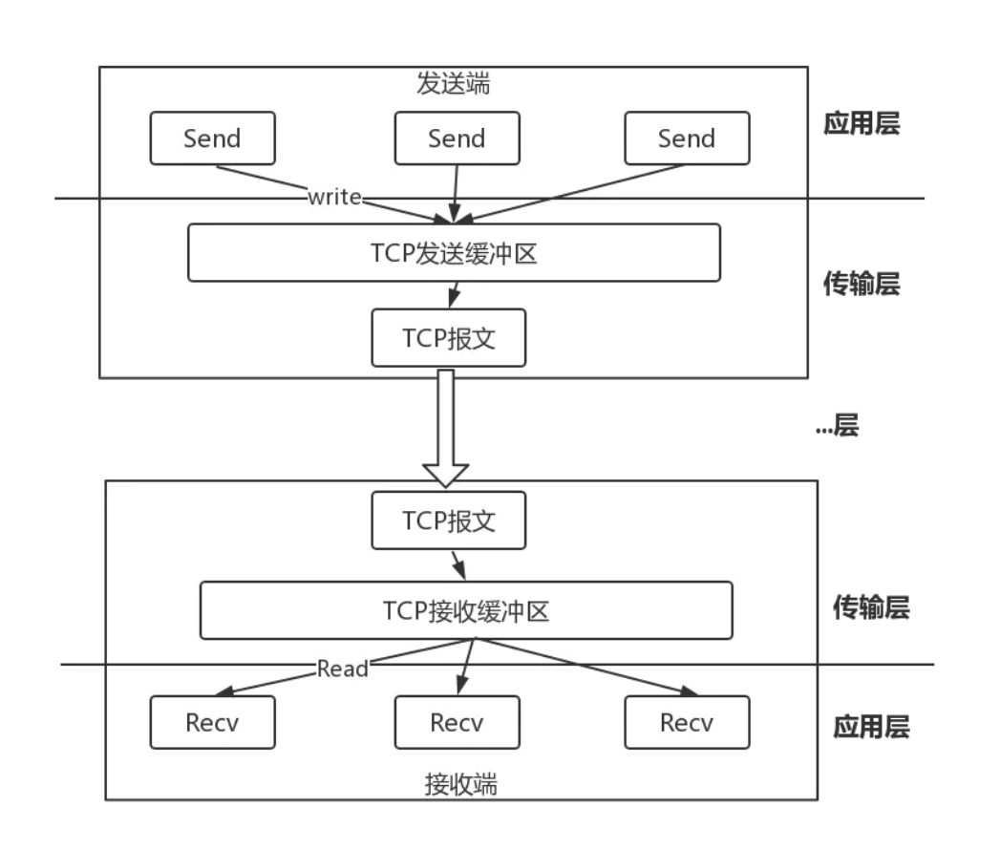
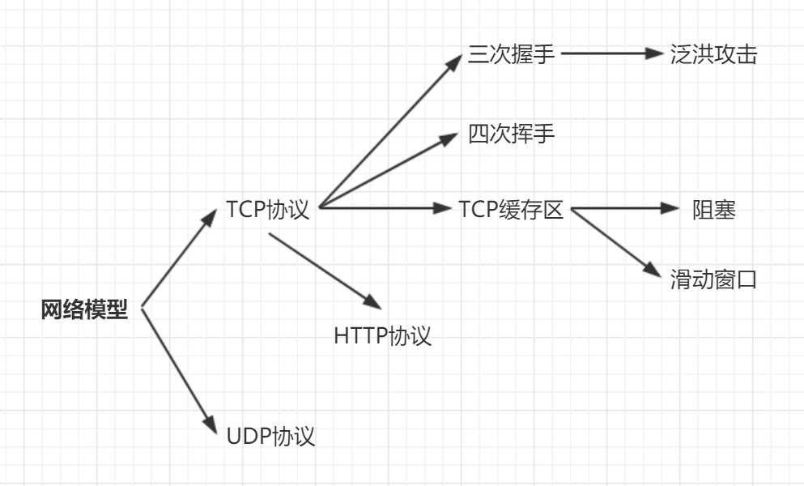

网络模型

各层的关系
每一个抽象层建立在低一层提供的服务上，并且为高一层提供服务。
HTTP协议

基本概念
HTTP协议是一个无状态的，应用层级的超文本传输协议（Hyper Text Transfer Protocol）
- HTTP是用于从WWW服务器传输超文本到本地浏览器的传送协议；不仅保证计算机正确快速的传输超文本文档，还确定传输文档中的内容，以及确定内容的优先显示等。
- HTTP是一个应用层协议，有请求和相应构成，是一个标准的客户端服务模型。
- HTTP是一个无状态的协议，同一个客户端的这次请求和上次请求时没有对应关系的。
- 默认HTTP的端口为80；HTTPS的默认端口为443。
- HTTP协议永远时客户端发起请求，服务端回送响应。
HTTP事务工作过程
工作过程有以下四步：
- 首先客户端与服务器需要建立连接。只要单击某个超级链接，HTTP的工作开始。
- 建立连接后，客户端发送一个请求给服务器。请求方式的格式为：统一资源标识符（URI）、协议版本号、MIME信息（包括请求修饰符、客户端信息和可能的内容）
- 服务器接到请求后，给予相应的响应信息。
- 客户端接收到服务器所返回的信息，通过浏览器显示在用户的显示屏上，然后客户端与服务器断开连接。
HTTP的优点
- 简单快捷。HTTP协议简单，通信速度快。
- 灵活。HTTP协议允许传输任意类型的数据
- 短链接。HTTP协议限制每次连接只处理一个请求，服务器对客户端的请求作出响应后，马上断开连接。这种传输方式可以节省传输时间。
HTTP请求方式
常用的请求方式：GET/POST
- GET方式： 是以实体的方式得到由请求URI所指定资源的信息。
- POST方式： 用来向目的服务器发出请求，要求它接受被附在请求后的实体。
HTTPS
HTTPS：是HTTP的安全版。HTTP下加入SSL层，HTTPS的安全基础就是SSL。
状态码
状态码分为客户端错误状态码、服务端错误状态码、成功状态码、重定向状态码等。
- 1**类状态码：Information状态码，表示信息正在处理。
- 2**类状态码：Success状态码，表示请求正常完成。
- 3**类状态码：Redirection状态码，表示需要客户端进行附加操作（如跳转、重定向）。
- 4**类状态码：Error状态码，通常是由于客户端的错误导致的。
- 5**类状态码：SeverError状态码，通常是服务端的错误导致的。
TCP/IP系列协议
TCP/IP是internet最基本的协议，把所有TCP/IP系列协议归类到四个抽象层中。
传输

- TCP 面向连接的、可靠的流协议；
- UDP 面向无连接的通讯协议；
- IP 在源地址和目的地址之间传送的数据包；
- ICMP 控制报文协议；
- IGMP internet组管理协议；
- ARP 地址解析协议；
- RARP 反向地址转化协议
三次握手
- 建立一个TCP连接需要经过“三次握手”。TCP三次握手具体过程如下：
- 第一次握手：客户端发送syn包（syn=j）到服务器，并进入SYN_SEND状态。等待服务器确认。
- 第二次握手：服务器收到syn包，必须确认客户的SYN（ack=j+1），同时自己也发送一个SYN包（syn=k），即SYN+ACK包，此时服务器进入SYN_RECV状态。
- 第三次握手：客户端接收到服务器的SYN_ACK包，向服务器发送确认包ACK（ack=k+1），包发送完毕，客户端和服务器进入ESTABLISHED状态，完成三次握手。
- 握手过程中，传送的包里不包含数据，三次握手完毕后，客户端与服务器正式开始传送数据。理想状态下，TCP连接一旦建立，在通信双方中的任何一方主动关闭连接之前，TCP连接都将被一直保持下去。断开连接时服务器和客户端均可以主动发起断开TCP连接的请求，断开过程需要经过“四次握手”。
- SYN（synchronous）是TCP建立连接时使用的握手信号；ACK（acknowledge）即确认字符，在数据通信中，接收站发给发送站的一种传输类控制字符，表示发来的数据已确认接收无误。
- 如果两次握手会怎么样呢？
理解题意：就是客户端为什么还要发送一次确认呢？
答：为了防止已经失效的连接请求报文又突然传送到了服务器，而产生错误。假设一种异常，客户端发出的请求由于网络阻塞没有及时到达服务器，后又重传请求，之后服务器相应了，切建立了连接，之后连接又释放了。此时假设客户端发出的第一个请求到达服务器，服务器误以为是客户端再次请求连接，服务器建立连接，如果采用两次握手，此时连接建立，而客户端又不发送数据，浪费了服务器的资源。
四次挥手
- 与建立连接的“三次握手”类似，断开一个TCP连接则需要“四次握手”。
- 第一次挥手：主动关闭方发送一个FIN，用来关闭主动方到被动关闭方的数据传送，也就是主动关闭方告诉被动关闭方：我已经不会再给你发送数据了。
- 第二次挥手：被动关闭方接收到FIN包后，发送一个ACK给对方，确认序号为收到序列+1。
- 第三次挥手：被动关闭方发送一个FIN，用来关闭被动关闭方到主动关闭方的数据传送，也就是告诉主动关闭方，我的数据也发送完了，不会再给你发数据了。
- 第四次挥手：主动关闭方收到FIN后，发送一个ACK给被动关闭方，确认序列为收到序列号+1。至此，完成四次握手。
握手与挥手图示

原理

Socket套接字：TCP用主机的IP地址加上主机上的端口号作为TCP连接的端点，这种端点就叫做套接字（socket）。
TCP缓冲区：每个TCP的Socket的内核中都有一个发送缓冲区和一个接受缓冲区。
阻塞模式
A.接收端缓冲区为空，接收端调用read方法的线程阻塞。
B.发送端缓存区满了或者不够大，发送端调用write方法的线程阻塞。
TCP的可靠性与高效率——滑动窗口
A.滑动窗口：发送方和接收方都会维护一个数据帧的序列，这个序列称作为窗口。
B.发送方的窗口大小由接收方确认
C.目的
- 确保数据不丢失：如果发送的数据丢失了可重新发
- 控制发送速度：控制发送速度，以免接收方的缓存区不够大导致溢出，同时控制流量也可以避免网络拥塞。
总结

TCP/IP与HTTP的区别
- TCP/IP协议（Transmission Control Protocol/Internet Protocol）：是传输层协议。主要解决数据如何在网络中传输。
- HTTP：是请求响应模式，是应用层协议。主要解决如何包装数据。
- Web使用HTTP协议作为应用层协议，以封装http文本信息，然后使用TCP/IP做传输层协议将它发送到网络上。HTTP是利用TCP在两台电脑（通常是web服务器和客户端）之间传输信息的协议。
- HTTP协议是建立在TCP协议基础之上的。当浏览器需要从服务器获取网页数据时，会发出一次HTTP请求。HTTP会通过TCP建立一个到服务器的连接通道，当本次请求需要的数据完毕后，HTTP会立即将TCP连接断开。
- HTTP连接最显著的特点是：客户端发送的每次请求都需要服务器回送响应，在请求结束后，会主动释放连接。从建立连接到关闭连接的过程为“一次连接”。
- TCP就是单纯建立连接，不涉及任何我们需要请求的实际数据，是简单的传输。HTTP是用来收发数据的。
- TCP/IP协议是一个协议集合。TCP/IP协议按照层次分为以下四层：应用层、传输层、网络层、数据链路层。分层的目的是：一个层只负责一个层次的问题，只要维护好这个层次就可以了。